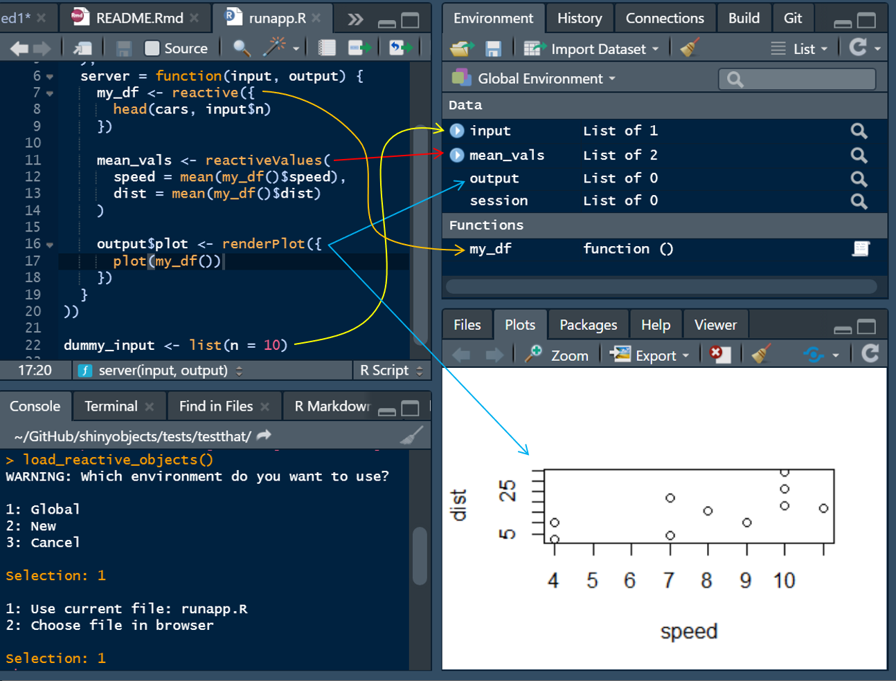
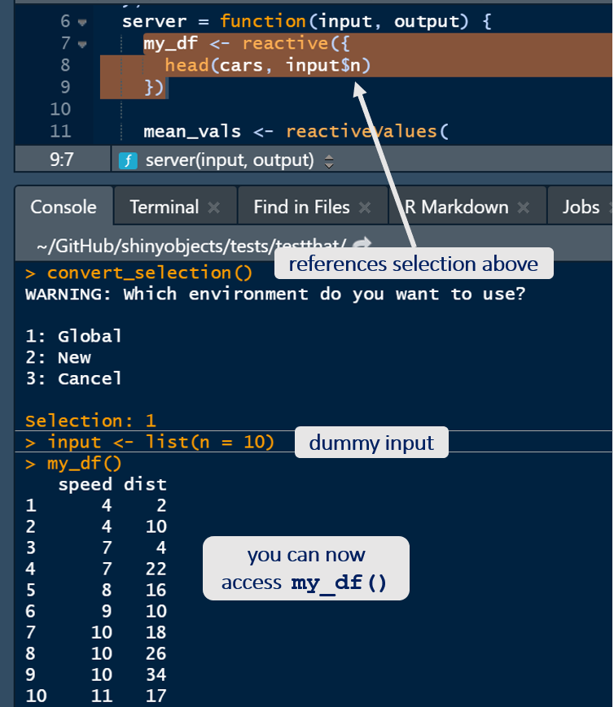
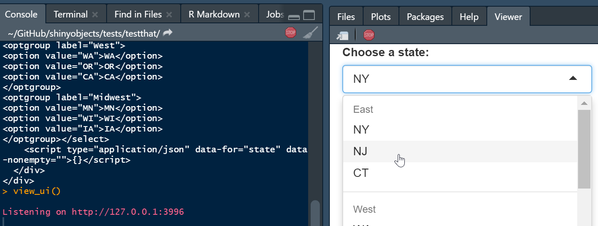
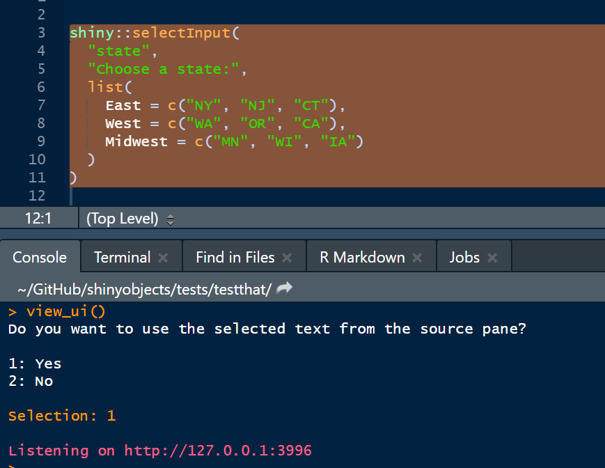

Troubleshooting reactive data in a shiny app or flexdashboard can be difficult. The goal of this package is to access reactive objects in your local environment. This allows you to debug your code without having to run the app. It is my hope that this will save you time and allow you to iterate more quickly.
How does it work?
The package converts reactive data frames into functions that will read from your raw data and become available in your environment. The main function, load_reactive_objects(), will recommended that you create a dummy input list in your script to simulate reactive inputs. When you run load_reactive_objects(), it will prepopulate this list. You can learn more about dummy input lists in this vignette. The package also includes a function to view your UI elements in the viewer pane (see below).
Installation
You can install the released version of shinyobjects from CRAN with:
install.packages("shinyobjects")
You can install the development version from GitHub with:
devtools::install_github("rjake/shinyobjects")
Usage
There is a quick tutorial on YouTube
…but in words, the main function of shinyobjects is load_reactive_objects(). It is similar to running source() but with a lot of helpers to give you access to the reactive data. When you run it, your environment will have all your libraries, raw data and assignments, dummy input, output and session lists, and all reactive() assignments will be converted to functions. In the dev version (for 0.2.0), you also get access to your render...() objects in the dummy output list. With the dummy input list and the conversion of reactive(x) to function() x, the code will run your data manipulation referencing your dummy input list and it will be like writing a normal script. Note: shinyobjects does not change your files; the manipulation happens behind the scenes.

library(shinyobjects) # If the app is open, the function will ask to use # the script currently active in the source pane load_reactive_objects()
This will result in something like the following message
Here are the inputs you have listed:
input_name times_used lines missing
1 displ 1 45 TRUE
2 year 2 48,49 TRUE
# Add this code to your R file:
dummy_input <- list(
displ = "",
year = ""
)If you are working on a flexdashboard, you will get a slightly different message to add a code chunk. Note this has eval=FALSE so it only runs when you need it for troubleshooting
#Add this code chunk to your Rmd:
```{r input_demo, eval = FALSE}")
input <- list(
displ = "",
year = ""
)
```It will then ask you where to put the objects when it sources the script:
Be careful here load_reactive_objects() will overwrite objects with the same name in your environment.
Hit 1 or 2 to select the environment. You can also specify the environment using the envir = ... argument.
The last prompt will confirm the file to use by looking in the source pane for the script you are currently working on.
There are additional arguments you can use to restart R or to clear the environment. The keep argument takes a regular expression as the pattern match. To get an exact match, use the ^ and $ to signify the beginning and end (ex. ^your_text$). To list objects, separate them with a |. as shown below.
load_reactive_objects( ..., restart = TRUE, clear_environment = TRUE, keep = "test_|^df$|raw_data" # objects to keep )
If you made a small change to your reactive code, you can highlight the code in your source pane and run convert_selection() in the console.

The package also has a function to view UI elements in a few ways:
You run view_ui() after sending the code the console. The html output will be used.

You can pipe it
shiny::selectInput( "state", "Choose a state:", list( East = c("NY", "NJ", "CT"), West = c("WA", "OR", "CA"), Midwest = c("MN", "WI", "IA") ) ) %>% view_ui(close_after = NULL)

Note that close_after is set to NULL in this example. The view_ui() function launches an app and defaults to closing after 5 seconds. You can adjusts how long it runs or use NULL and stop it manually by using the stop sign.:red_circle:
You can also highlight the code you want to view similar to convert_selection(). 